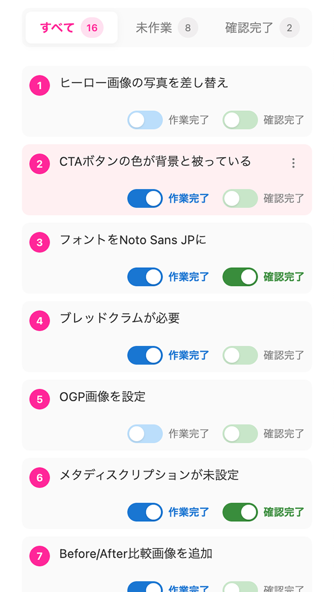
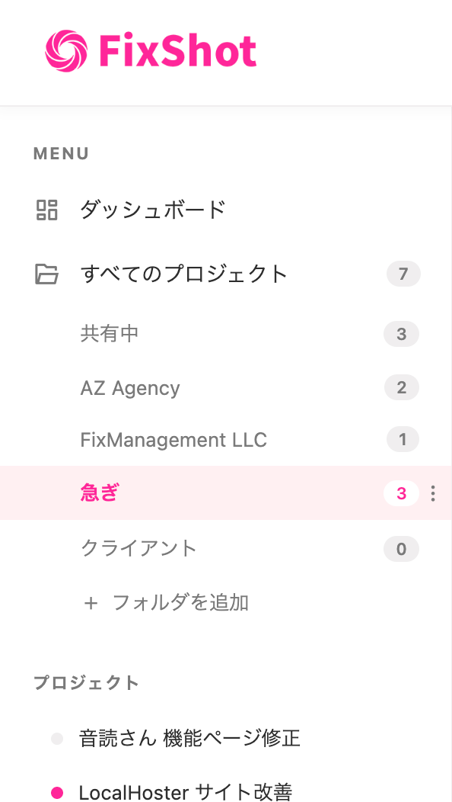

FixShotの基本操作を説明します
3ステップで始められます
Chrome ウェブストアからFixShotを追加。インストールは数秒で完了します。
確認したいページを開いてキャプチャ。気になる箇所を囲んでコメントを残します。
共有リンクを発行して相手に送るだけ。相手はログイン不要でブラウザから確認できます。
キャプチャボタンで表示中のページを追加。画像ファイルのアップロードにも対応しています。

スクリーンショット上で修正箇所を矩形で囲み、コメントを追加。視覚的に伝わる指示が作れます。

各注釈に「作業完了」「確認完了」のチェックを付けて進捗を管理。対応漏れを防ぎます。

プロジェクトを作成して案件ごとに管理。リスト名を変更したり、不要なリストを削除できます。

Googleアカウントでログインします。共有機能の利用にはログインが必要です。
エディター画面の共有ボタンをクリックして、共有リンクを発行します。
生成されたリンクをコピーして、チャットやメールで相手に送るだけ。相手はログイン不要で閲覧できます。
操作の流れを動画でご確認ください
キャプチャから注釈・タスク管理・共有までの基本フロー
各注釈のタスクを作業完了・確認完了としてマーク